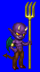
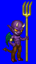
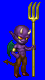
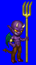

Height: 5-140 cm Weight: 100 lbs.
Habitat: Underworld Origin: Europe
Meaning: Old English "impa" or child
Imps are often cast as the servants of witches or demons, and love to make mischief. Its entire body is black, with a long tail, pointed ears, and red eyes. The imp's batlike image and connotation as a "child of the devil" became what it is today at the end of the sixteenth century.